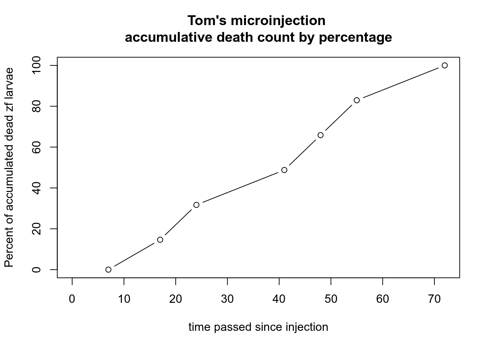
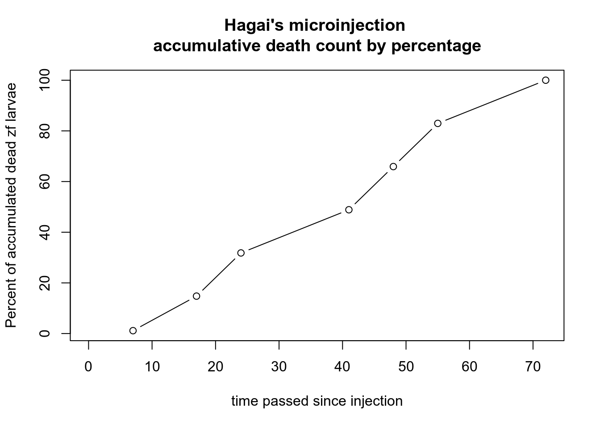

Chapter 2 M743T KI modeling
2.1 13Nov2019 CRISPR/Cas9 (with HD) zebrafish zygote microinjection protocol:
ssODN dilution:
Stock ssODN (M743T HD) is concentrated to 5932 ng/µg, dilution is required for injection mix preperation.
Mix material by Table 1’s instructions on ice. Afterwards carry out vortex and spindown.
Table 1 - ssODN dilution:
Cas9 protein dilution:
Stock Cas9 (protein) is concentrated to 5000 ng/µg, dilution is required for injection mix preperation.
Mix material by Table 2’s instructions on ice. Afterwards carry out vortex and spindown.
Table 2:
| Material | Initial Concentration | Volume to pick | DDW | final concontration | Final Volume |
|---|---|---|---|---|---|
| Cas9 | 5000 ng/µL | 1 µL | 4 µL | 1000 ng/µg | 12 µL |
Cas9/gRNA complex formation
Mix:
- DDW from Table 3 microinjection mix.
- Cas9 from Table 3 microinjection mix.
- gRNA from Table 3 microinjection mix.
Place in incubation at 37°C for ~10 miutes.
Injection mix:
On ice, mix the following materials. Perform vortex and spindown.
Table 3:Scr7 Dilution:
In a 50 ml falcon tube:
Table 4:
DMSO Dilution:
In a 50 ml falcon tube:
Table 5:
Injection:
- After zf mate - TL type, injection volume ~2 nL of injection mix (table 3), inject embryos at 1-cell stage on agarose gel track plate (pre heated to 28.5°C).
- Keep a few embryos uninjected for negative control.
- After injection move to Scr7 medium.
2.2 13Nov2020 Microinjections:
Date: November 13th, 2019 Following protocol
We got our first batch which I now call Batch number 1.
2.2.1 Batch table:
Batch 1 compiles of 40 zygotes, 27 of which were microinjected by Hagai, 13 of which were injected by me. See my plate, or Hagai’s plate
{kind=link}
{kind=link}
Due to distance between our lab and lab 3 where the microinjections took place, along with unawareness of lack of devices such as 10 µL pipettes, we performed the injections on 8-16 cell stage zygotes (Hagai and I).
In my case some of the microinjections did not enter the cell, most were inside the egg close to the cell.
2.2.2 Microinjection expertise examination Tom V Hagai
Date: December 10th, 2019 After conducting Microinjections on November 13th, I have data about larvae’s survivability after injection. Part of the experiment’s objectives was to examine my skills vs Hagai’s skills.
2.2.3 Table 7:
| Date checked | Time of the day | Live count | Dead Count | Dead accumulated | Dead accumulated percentage | Time |
|---|---|---|---|---|---|---|
| 13-Nov | Morning | 13 | NA | NA | NA | 0 |
| 13-Nov | Evening | 13 | 0 | 0 | 0.00000 | 7 |
| 14-Nov | Morning | 7 | 6 | 6 | 14.63415 | 17 |
| 14-Nov | Evening | 6 | 7 | 13 | 31.70732 | 24 |
| 15-Nov | Morning | 6 | 7 | 20 | 48.78049 | 41 |
| 15-Nov | Evening | 6 | 7 | 27 | 65.85366 | 48 |
| 16-Nov | Morning | 6 | 7 | 34 | 82.92683 | 55 |
| 16-Nov | Evening | 6 | 7 | 41 | 100.00000 | 72 |
2.2.4 Table 8:
2.2.5 Graph 1:

2.2.6 Graph 2:

2.2.7 DF1:
## Date checked Time of the day Live count Dead Count Dead accumulated
## 13-Nov:2 Evening:4 Min. : 6.000 Min. :0.000 Min. : 0.00
## 14-Nov:2 Morning:4 1st Qu.: 6.000 1st Qu.:6.500 1st Qu.: 9.50
## 15-Nov:2 Median : 6.000 Median :7.000 Median :20.00
## 16-Nov:2 Mean : 7.875 Mean :5.857 Mean :20.14
## 3rd Qu.: 8.500 3rd Qu.:7.000 3rd Qu.:30.50
## Max. :13.000 Max. :7.000 Max. :41.00
## NA's :1 NA's :1
## Dead accumulated percentage Time
## Min. : 0.00 Min. : 0.00
## 1st Qu.: 23.17 1st Qu.:14.50
## Median : 48.78 Median :32.50
## Mean : 49.13 Mean :33.00
## 3rd Qu.: 74.39 3rd Qu.:49.75
## Max. :100.00 Max. :72.00
## NA's :12.2.8 DF2:
## Date checked Time of the day Live count Dead Count Dead accumulated
## 13-Nov:2 Evening:4 Min. :12.00 Min. : 1.00 Min. : 1.00
## 14-Nov:2 Morning:4 1st Qu.:12.00 1st Qu.:13.50 1st Qu.:20.50
## 15-Nov:2 Median :12.00 Median :15.00 Median :43.00
## 16-Nov:2 Mean :16.00 Mean :12.57 Mean :43.43
## 3rd Qu.:17.75 3rd Qu.:15.00 3rd Qu.:65.50
## Max. :27.00 Max. :15.00 Max. :88.00
## NA's :1 NA's :1
## Dead accumulated percentage Time
## Min. : 1.136 Min. : 0.00
## 1st Qu.: 23.295 1st Qu.:14.50
## Median : 48.864 Median :32.50
## Mean : 49.351 Mean :33.00
## 3rd Qu.: 74.432 3rd Qu.:49.75
## Max. :100.000 Max. :72.00
## NA's :12.3 03Feb2019 A1 DNA extraction & PCR for sequencing, TL AB exon 3 seq
February 3rd, 2020
2.3.1 Exon 3 sequencing
Project students require exon 3 sequence of AB and TL ZF to modify their reations based on our strains’ SNPs.
- Single ABwt individual from Jan 30th, 2020 breeding; AB genotype - .
- Single TLwt, jan 26th, 2020 breeding; D8 parents.
Their positions on the strip [FCD#001 3.2] are:
| 1 | 2 | 3 | 4 | 5 | 6 | 7 | 8 |
|---|---|---|---|---|---|---|---|
| x | AB | TL | x | x | x | x | x |
2.3.2 Larvae DNA extraction protocol:
For larvae samples.
Place larvae in tube and let it fall asleep cooling on ice.
Drain water with pipettor.
Add 50 [µl] lysis buffer.
Incubate for 10 [min] at 95 [°C].
Add 2.5 [µl] Protein K.
Incubate for 2-16 [h] at 55 [°C].
Cool on ice.
- Placed the tubes in our lab’s PCR device. .
2.3.3 A1 FC PCR - PCRFC#001
Again, for project students, these are the samples they tested nested PCR on (inner R primer specific for my KI design). I do believe these samples are from details established at 2017 and not my details.
- Took a 1:10 dilution from stock DNA extract made by Hagai on FC from A1 details (Are now in genotype, )
- The following PCR established:
PCR mix:
| Content | 1X volume [µl] | 8X volume [µl] | Concentration |
|---|---|---|---|
| DNA | 1 | 8.2 | |
| F1 primer (M743T outer) | 1 | 8.2 | |
| R1 primer (M743T outer) | 1 | 8.2 | |
| GoTaq | 12.5 | 102.5 | |
| DDW | 9.5 | 77.9 | |
| Total | 25 | 205 |
insert concentrations
PCR conditions: Insert PCR conditions
In tubes:
| 1 | 2 | 3 | 4 | 5 | 6 | 7 | 8 |
|---|---|---|---|---|---|---|---|
| A1-1 | A1-2 | A1-3 | A1-4 | A1-5 | A1-6 | A1-7 | NC |
2.3.4 Preparations for sequencing:
Preparing primers for sequencing:
| Name | DDW [µl] | 100 nM (?) Primer Volume[µl] | Total | Label for sequencers |
|---|---|---|---|---|
| ex12 345 R | 47.4 | 2.5 | 50 | R1 |
| ex12 1F | 47.4 | 2.5 | 50 | F1 |
2.4 07Jan2020 gRNA IVT (/w GNE 2020 project team):
INSERT PROTOCOL
MISTAKES
- No DNase was added before RNA production(word?) was made. Gel expresses the presence of template DNA.
DATA to collect:
- Materials, cas and other catalog numbers.
- Number of gRNA tubes.
- Gel run-time:
- 70 min, 110V
- 2 8 well gels
- 0.495g TopVision
- 0.459g hy-labs
- 33 ml TBEX0.5
- Gelred
- 5 µl loaded to gel
Files: * gRNA Gel 1 Image 0.5µl IVT in 2.5µl DDW and 3µl kit buffer * gRNA Gel 1 Image 0.5µl IVT in 5.5µl DDW, then 3µl of that with 3µl kit buffer * Nanodrop results
{kind=link}
{kind=link}
2.5 10June2020 Fin clips, 19-20 May 2020 - Lab procedure and results
2.5.1 PCR preparation:
- Made a working stock for
ex12_345Rreverse primer for exon 12 amplification. - 10 \(\mu M\) from \(10 \mu l\) of \(100 \mu M\) stock and \(90 \mu l\) DDW.
- I will PCR only strips: A-D + Z.
- A-D PCR by WTS only (need to perform F1_2 for heterozygotes screening).
- Strips A-D + Z were boiled at $95 $ for 10 minutes.
- Mixes for ex12 and WTS amplifications were prepared according to 9June2020 preparation tables.
- DNA extract were dilute 1/40 from stock.
- DNA for Z was taken from a 1/10 dilution.
2.6 PCR strip
A: A1-A8 B: B1-B5, 6=NTC, B7-B8 C: C1-C8 D: D1-D7 Z: Z1-Z3, Z6-Z8, 7=NTC, 8=-
2.6.1 PCR programs:
Users>HL>28WTSF
System>Tom>Ex12345
2.6.2 Results:
Strips A,B,C Strips D,Z Both gels: 1.5%, 120V @ 28min.
2.6.3 Stored:
- PCR amplicons inside Molecular lab (big) at $-20° fridge.
- DNA extracts in our lab’s fridge.
2.6.4 Follow up:
- Analyze results.
- Repair PCR for strip Z, send to sequence.
- PCR strip Y.
- PCR A-D+Y, F1_2.
- Move Fish accordingly.
- Repair latex code for tables 9June2020…. (Image for DNA extract box at daily folder)
2.7 11June2020 Incubator Documentation 24well plates
2.7.1 Dish A from 2June2020
9June2020 is 7 dpf, n=43 From which 7 died and sampled, 8 were taken to “poor” plate, rest left. 10June2020 eve, n=39
Today I replaced water and counted \(n=38\). 1 detail was moved to small dish for poor A larvae (new) (Movie_453.avi) plate markings:
| A 11June2020 Poor details |
| n=1 |
2.7.2 Dish B From 2June2020:
Offspring tracking. 9June2020 dfp = 7, n = 28 10June2020 dpf = 8, n = 27 10 “poor” details were separated to plate B.
Easy peasy no one showed any lack of money. 1 dead on lid, taken to new strip S1 at position 1 | 1 | 2 | 3 | 4 | 5 | 6 | 7 | 8 | |—————————-+—+—+—+—+—+—+—| | 11.6 From big dish B (2.6) | | | | | | | |
2.7.3 Big dish C From 3June2020
Cross +/- X +/- from #6 9june2020 6dpf n=54
11june2020 - n=48 (reafirm) fed and water replaced
2.7.4 24plate B:
2.7.4.1 no.55 from 8june2020
9june n=55 10june n=39 11june: n=39 no gfp
2.7.4.2 no.48 from 8june2020
n=60 9june =55 10june n=55 11june: n=55
2.7.4.3 inj3 09june2020
09june n= 38 09june n=31 10june n=25 11june: n=23
2 details look really poor were separated
2.7.4.4 inj3 control (no injection) no.79 9june2020
n0=79 9june n=7 10jun n=6 11june all still in chorion, n=6
2.7.4.5 inj2 8june2020
n0=38 11june2020 n= 21
2.7.4.6 inj2 control 8june2020
n0 = 10 11june n=8
2.8 15Jun2020 Nu7447
Nu777 arrived look at arts an prepare stock. Store at 4 deg C.
2.9 16Jun2020 CRISPR/Cas9 MI KI
Inj by protocol no.
Parents TL wt from system assorted tank no. 22 gave first batch of eggs. 33 of which injected, 6 put aside for control.
Parents TLwt from SAT no. 24 gave a bad batch, 2nd batch 42 inj (24 live), 3rd batch missed (4 cell stg) of which 49 put aside for control.
Took me 36 min to prep mix
FAILED - NO BREADING
2.9.1 Inj ovservation and treatment:
From: inj 15june2020 1dpf
• no. 22 CR n=13 • no.22 control n=3 • no. 24 CR n=3 • no.24 Control n=9
Time of treatment: 11:00
2.9.2 Inj ovservation and treatment:
• no. 22 CR n=13 • no.22 control n=3 • no. 24 CR n=2 1 sampled to strip (16.6 sCR AAA1) pos. 1 @ 20 µl buffer lysys. • no.24 Control n=9
Time of treatment: 18:08
2.10 19June2020 Fin clips, 19-20 May 2020 - Planning
Fin clip for mut zfGNE and model ZF from May 2020 Introduction: During 19-20 may 2020 we collected fin flips from M743T KI ZF, mut zfGNE and hGNE zf KO models.
Strip Z contained KI ZF as follows
| Strip position | Expected genotype | Fish physical position |
|---|---|---|
| 1 | M743T | A1 |
| 2 | M743T | A2 |
| 3 | M743T | A3 |
| 4 | Alon alpha actin | |
| 5 | Alon alpha actin | |
| 6 | M743T | A6 |
| 7 | M743T | A7 |
| 8 | M743T | A8 |
Even though we took FC of 4 and 5 (strip positions) we won’t sequence them since there’s no need to, we do need to breed them though.
strip y goes as follows:
| strip position | expected genotype | fish physical position |
|---|---|---|
| 1 | AB tg mut Cross TL zfGNE | A9 |
| 2 | AB tg mut Cross TL zfGNE | A10 |
| 3 | AB tg mut Cross TL zfGNE | A11 |
| 4 | ||
| 5 | ||
| 6 | ||
| 7 | ||
| 8 |
Beyond that we also got Strips A-D which contain FC from 15 dpf larvae that urgently need to be placed into a container.
2.10.1 PCR mixes:
For Strip Z:
For the rest:
WTS: F1_22.10.2 Dna Extract
• DNA extract from yesterday were put in - 20 deg. ## 23Jun2020 CRM743T Genotyping in my strip box inj room fridge
strip 23.06FC
| Strip.pos | Ex.Geno | Sys.loc |
|---|---|---|
| 1 | TLwt | old |
| 2 | TLwt | old |
| 3 | TLwt | old |
| 4 | ki | #9fem |
| 5 | ki | #29fem |
| 6 | ki | #58fem |
| 7 | ki | #29mal |
| 8 | ki | #29mal sameasabove |